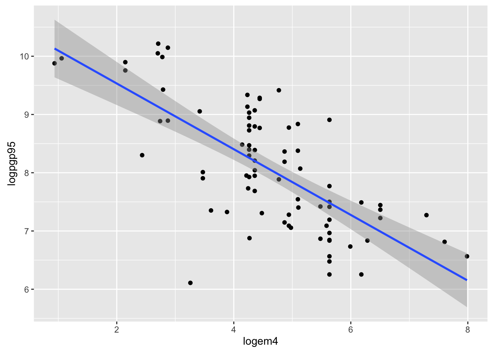

POL S/CS&SS 501, University of Washington, Winter 2016
$$ \DeclareMathOperator{\mean}{mean} \DeclareMathOperator{\var}{var} \DeclareMathOperator{\E}{E} \DeclareMathOperator{\MSE}{MSE} \DeclareMathOperator{\Bias}{Bias} \DeclareMathOperator{\SE}{se} \DeclareMathOperator{\SD}{sd} \DeclareMathOperator{\argmin}{argmin} \DeclareMathOperator{\argmax}{argmax} $$Difference in Means: T-Test and Hypothesis Testing
Andreu Casas
January , 2016
In this lab we will use data from Acemoglu et al.’s (2001) paper “The Colonial Origins of Comparative Development: An Empirical Investigation” in AER.
Go to Acemoglu’s website, and download the data to replicate Table 1.
Challenge:
Skim the paper and briefly describe:
- What’s the puzzle/question?
- What’s their argument?
- What are their key variables?
Read the data in:
library(rio)
data <- import("data/ajr_2001.dta")Challenge:
Explore the data:
- How many obersvations (rows) and variables (columns) does the dataset have?
- What does each observation represent?
- How many unique countries (
shortnam) are in the dataset? - Is there a country that shows up more than once?
- Are there any missing values for any variable?
When importing STATA (.dta) dataset using the rio package, we have access to the variables description. We wrote a function in the uwpols501 package to check the variables description of STATA datasets loaded into R using rio.
library(devtools)
install_github(username = "jrnold", repo = "UW-POLS501/r-uwpols501")library(uwpols501)
extract_var_info(data)## [1] "3 letter country name"
## [2] "European settlers 1900, AJR"
## [3] "=1 if was colony FLOPS definiti"
## [4] "average protection against expropriation risk"
## [5] "log PPP GDP pc in 1995, World Bank"
## [6] "cons on exec in 1st year indep"
## [7] "democracy in 1900"
## [8] "constraint on executive in 1900"
## [9] "corrected mortality"
## [10] "log settler mortality"
## [11] " log GDP per work, Hall&Jones"
## [12] "base sample Colonial Origins paper"The variable extmort4 contains information about potential settlers mortality (See Note in Figure 1 of the paper for a description of the variable: measured in terms of deaths per annum per 1,000…)
Challenge:
Explore the logpgp95 and logem4 variable:
- Do they have missing values? If they do, are they the same?
- Summarize and explore the variables
- Why do they take the log of
mortality rateandgdp in 1995? - What would be the best way to plot this variable in order to analyze its distribution?
summary(data$extmort4)
summary(data$logem4)logem4 is the log of extmort4. They calculate the log of mortality-rate because they theorize that it has a log-linear relationship with the type of institutions (avexpr) and economic growth (logpgp95).
library(ggplot2)
p <- ggplot(data, aes(x= extmort4))
p + geom_histogram(bins = 30)## Warning: Removed 76 rows containing non-finite values (stat_bin).p + geom_density() ## Warning: Removed 76 rows containing non-finite values (stat_density).Use a plot to explore the relationship between the variables logem4 and logpgp95.
ggplot(data, aes(x = logem4, y = logpgp95)) +
geom_point() +
geom_smooth(method = "lm")## Warning: Removed 82 rows containing non-finite values (stat_smooth).## Warning: Removed 82 rows containing missing values (geom_point).
Another way to evaluate AJR’s theory that the mortality rate in new settlements conditioned the type of institutions that metropolies implemented in different territories and, as a result, the future economic growth in those regions, would be to compare the mean economic development (logpgp95) between countries with low and high mortality rates (logem4)
Create a new dummy variable indicating those countries that have a value of logem4 in the top 3 quantiles (==1). Also remove from the dataset those observation that do not have a value for logem4.
library(dplyr)
data <- data %>%
mutate(high_mort =
factor(as.numeric(logem4 > quantile(data$logem4, probs = .25, na.rm = TRUE))))
data <- mutate(data, high_mort = ifelse(high_mort == 0, "low", "high"))
data <- data %>%
filter(! is.na(high_mort))Challenge:
How would we calculate the mean logpgp95 for each group (high_mort == “low” and “high”) and a 95% confidence interval around those means?
differences <- data %>%
group_by(high_mort) %>%
summarize(n = length(logpgp95),
x = round(mean(logpgp95, na.rm = TRUE), 2),
s = round(sd(logpgp95, na.rm = TRUE), 2),
t_val = round(abs(qt(0.05/2, n)), 2),
se = round((s / sqrt(n)), 2),
lwr = round(x - (t_val * se), 2),
upr = round(x + (t_val * se), 2)) %>%
as.data.frame()
differences <- differences[1:2,]| high_mort | n | x | s | t_val | se | lwr | upr |
|---|---|---|---|---|---|---|---|
| high | 65 | 7.80 | 0.88 | 2.00 | 0.11 | 7.58 | 8.02 |
| low | 22 | 8.88 | 1.16 | 2.07 | 0.25 | 8.36 | 9.40 |
A simpler way to calculate the mean avexpr (+ 95% CIs) for these two groups is to use the t.test() function in R.
low_test <- t.test(select(filter(data, high_mort == "low"), logpgp95))
high_test <- t.test(select(filter(data, high_mort == "high"), logpgp95))
low_estimates <- data.frame(x = low_test$estimate, lwr = low_test$conf.int[1],
upr = low_test$conf.int[2])
high_estimates <- data.frame(x = high_test$estimate, lwr = high_test$conf.int[1],
upr = high_test$conf.int[2])
differences2 <- as.data.frame(rbind_list(high_estimates, low_estimates))
print(xtable(differences2, caption = "Differences2"),caption.placement = "top", type = 'html',
comment = FALSE, include.rownames = FALSE)| x | lwr | upr |
|---|---|---|
| 7.80 | 7.58 | 8.03 |
| 8.88 | 8.33 | 9.42 |
There is a simpler way to do it with the broom package
library("broom")
data %>%
group_by(high_mort) %>%
do(tidy(t.test(.$logpgp95))) %>%
xtable(caption = "Differences 3") %>%
print(caption.placement = "top", type = 'html',
comment = FALSE, include.rownames = FALSE)| high_mort | estimate | statistic | p.value | parameter | conf.low | conf.high |
|---|---|---|---|---|---|---|
| high | 7.80 | 69.19 | 0.00 | 60.00 | 7.58 | 8.03 |
| low | 8.88 | 34.10 | 0.00 | 19.00 | 8.33 | 9.42 |
We can plot these two means and CIs to see more clearly if they overlap.
ggplot(differences, aes(x = high_mort, y = x)) +
ylim(min(select(differences, lwr)), max(select(differences, upr))) +
geom_point(size = 1) +
geom_errorbar(aes(ymin = lwr, ymax = upr), width = .1) +
ggtitle("Mean average protection against expropriation
by Mortality Rate") +
ylab("Av. Prot. against Expr.") +
xlab("AJR's Mortality Rate Index ")We can also use the t.test function to test if these two means are statistically distinct.
tt_mort <- t.test(data$logpgp95 ~ data$high_mort)
tt_mort##
## Welch Two Sample t-test
##
## data: data$logpgp95 by data$high_mort
## t = -3.7938, df = 26.499, p-value = 0.0007798
## alternative hypothesis: true difference in means is not equal to 0
## 95 percent confidence interval:
## -1.6594863 -0.4938429
## sample estimates:
## mean in group high mean in group low
## 7.803004 8.879669
This work is licensed under a Creative Commons Attribution-NonCommercial-ShareAlike 4.0 International License. R code is licensed under a BSD 2-clause license.